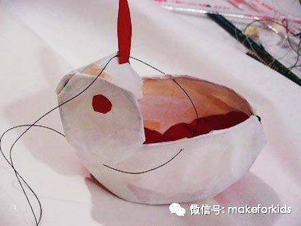
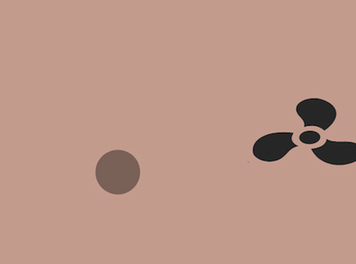

Aeolian Air Butler is a smart home air-purifying system that helps the air condition at home reach its optimal state in the most efficient way. It consists of sets of sensors, mobile app and robotics on the air purifier that can communicate among each other, creating an intelligent system that provides information on and control over the air quality at home.
Aeolian Air Butler entered and won Autodesk Smart Home Design Challenge, Shanghai, 2015. Air Butler prototype was built with Arduino Yun, with customized PCB board and 3D Printing.
Class: Rapid Prototyping; From Prototype to Fabrication.
A STORY ABOUT LONELINESS
A Story About Loneliness is a work of Stop Motion animation I made with a pig puppet. The animation tells how I understood loneliness. There were a bunch of questions that can be asked regarding what happened in this story and everyone can have his/her own interpretation
I composed and produced the music pieces for this story about loneliness.
This animation is produced with Dragonframe.
Class: Communications Lab.
RHYTHMANIA
Rhythmania is a smart pedal that chooses music to play based on the rhythm of the user stepping on it. It enables people to dance spontaneously, leaving the task of finding music to Rhythmania and disrupting the convention that people have to adjust their moves to the music.
This interactive device is made possible by combining Processing and Arduino.
Rhythmania was featured multiple times in events and expos.
Class: Intro to Physical Computing
GYMCRAFT
Gymcraft is a massive multiplayer online roleplaying game that requires action-packed work and social community to overcome obstacles. With hardware integration, fitness tracking, quests, and guilds, the user is enabled to explore a world filled with mystery and adventure. Rich landscape opens up as the user's character levels up.
The prototype is finished with Intel Edison, Unity and Pebble. This is a teamwork product at 2015 China-US Young Maker Competition with Shirley Huang, Michael Lukiman and Oliver Barry.
COLORDIGGER
ColorDigger is a game designed to test and enhance sensitivity to colors and instant memory.
Circles of random colors are generated at random locations on the map for a couple of seconds as the game starts. Then the circles disappear and the bear ColorDigger need to dig them out of the map.
This is a web game built with HTML, Javascript. jQeury Mobile and Processing.
Class: Developing Web
AUTOLANTERN

AutoLantern is a rabbit lantern that turns on itself when the environment is dark and turns off when the environment is bright.
This lantern is made with Arduino Nano.
This is an interactive toy I designed for MakeForKids Workshops to introduce Arduino to children.
By trying to complete an AutoLantern by themselves, children can learn about the basics of electronics and
Arduino as well as practice their handcrafts.
GRAVITY&WIND

Gravity&Wind is a small program I made that simulates a bouncy ball under the force of gravity and wind, taking into consideration the gravity, the wind, air resistance and the bounciness of the ball.
I just think it is cute.
This project is built with Processing
Class: Computational Media.
ANTIPROCRASTINATOR
Antiprocrastinatoris an web app I built to help college students with overcoming procrastination.
Antiprocrastinator is basically an event manager that enables the user to set up a goal for each day
and set long-term and short-term project reminders. The user can define the importance and the deadline
of each project and keep track of them.
This project is built with Javascript, jQuery Mobile, PHP and MySQL.